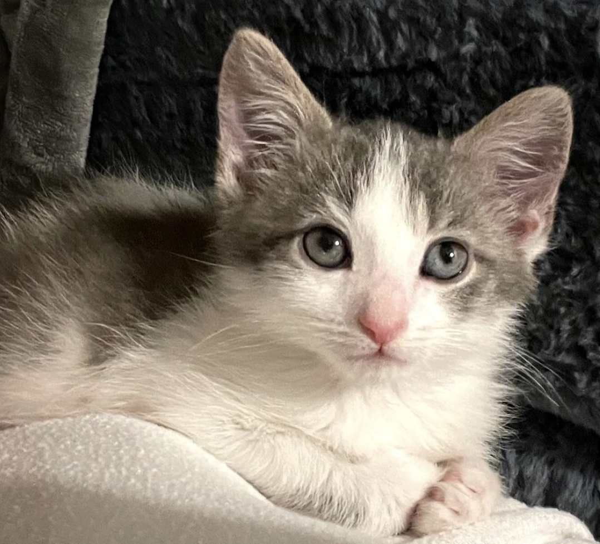
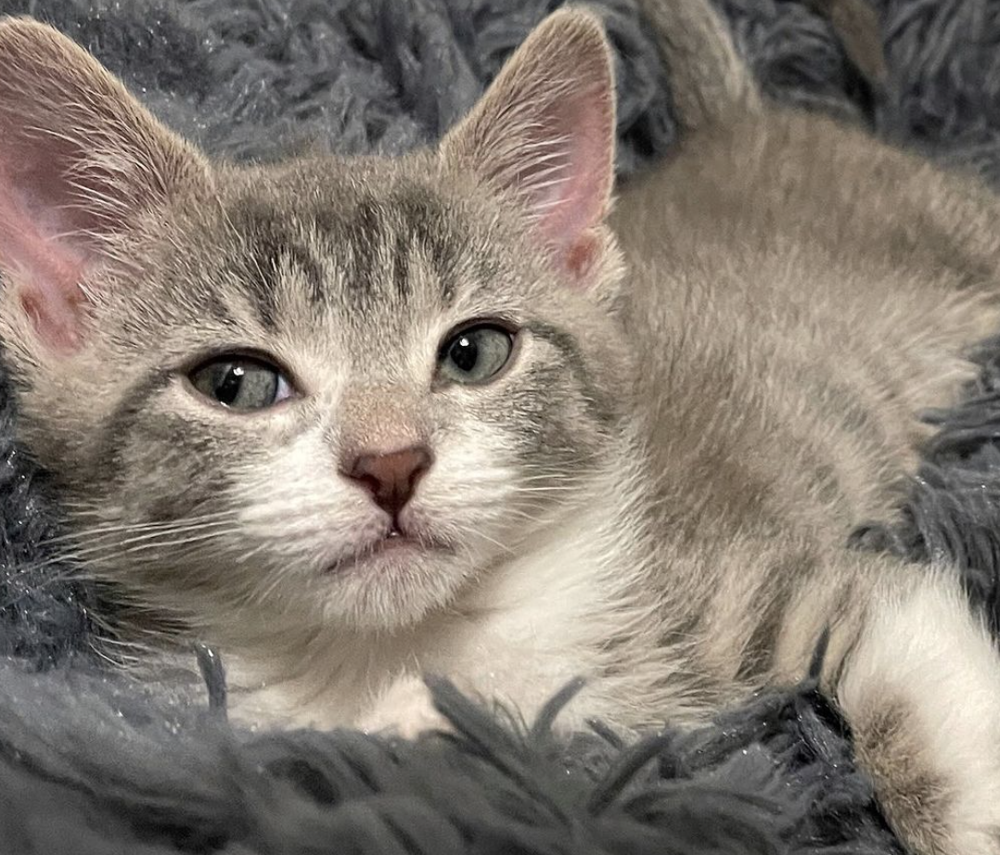
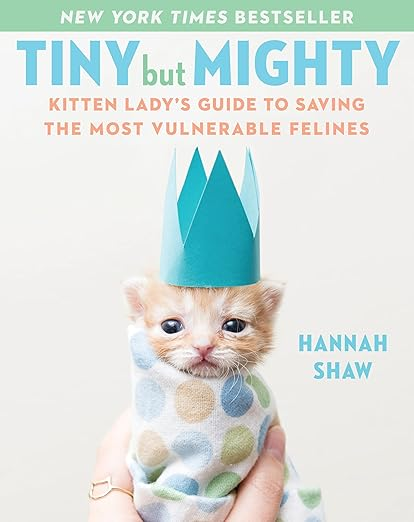
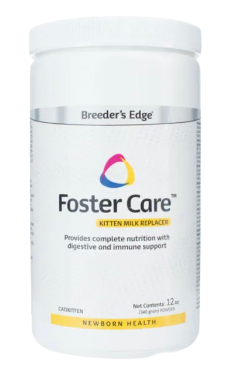
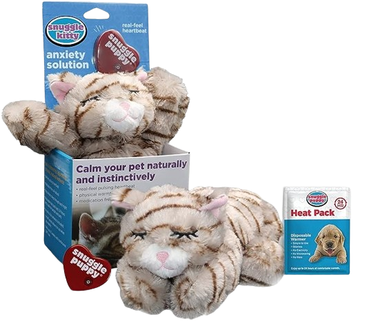
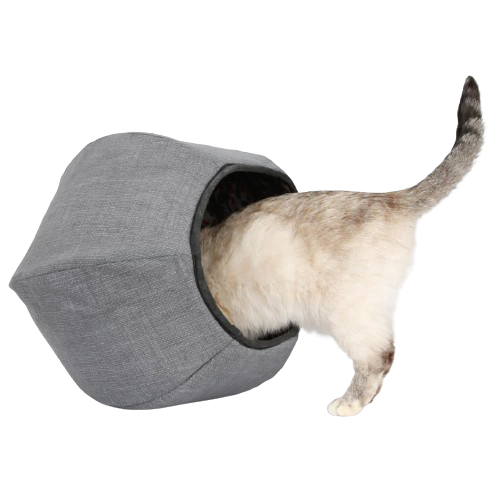

Balsam - 8 Weeks
Aloe - 8 Weeks
As an independent foster home, Kitten Smitten partners with a variety of animal rescue organizations and shelters across the Chicagoland area, including PAWS, the Anti-Cruelty Society, the Critical Animal Relief Foundation (CARF), Felines of Chicago, and Forever Fortunate Felines. For the last three years, the majority of our work has been done in partnership with the Catcade Cat Café and Lounge, where we lead the neonatal fostering program.
We typically care for foster kittens during their first 10-12 weeks, then return them to the shelter or rescue when they are big and healthy enough for adoption. While we might provide input on potential adopters for our fosters, the rescue is solely responsible for reviewing and approving applications and has the final say in matching kittens with their best adoptive homes.
Our focus is on four primary areas of care:
1. Feeding. In addition to standard bottle feeding, we can also tube feed and/or syringe feed kittens when necessary. Healthy kittens are usually weaned off formula and onto canned food when they are between 5 and 7 weeks old.
2. Environment. We provide kittens with a variety of age-appropriate settings. Neonatal fosters generally start in the incubator, progress to a playpen as they’re learning to run, jump, and play, then graduate to the foster room once they’re fully trained in using the litter box.
3. Medications. We are in constant contact with our rescue partners and their vets to ensure the health of our kittens. Under their supervision, we will administer a variety of medications during the foster period, including routine dewormers, oral antibiotics, injectable penicillin and B12 – even sub-q fluids when dehydration is a concern.
4. Socializing. Because our fosters associate human hands with food and comfort from a very young age, they tend to grow up to be very people-friendly housecats. We get them used to living in a home environment by routinely exposing them to typical household noises (vacuums, door buzzers, etc.) and activities, including my personal favorite -- lounging on the couch with the whole family for movie night.
Interested in learning more about fostering bottle babies? Here some reputable online resources to get you started!
Kitten Lady's Wesbite Kitten Lady's Youtube Maddie's Fund Best Friends Austin Pets AliveKitten Lady’s Guide
Kitten Formula
Snuggle Kitty
The Catball
